2-12막 · 바다의 정령들
한국어 번역은 독일어 원문에 대응하는 자동 번역 초안입니다.

독일어 원문 · 한국어 번역
NEREIDEN UND TRITONEN:
Drei haben wir mitgenommen,
Der vierte wollte nicht kommen;
Er sagte, er sei der Rechte,
Der für sie alle dächte.네레이드와 트리톤: 우리는 세 개를 데리고 갔다 네 번째는 오기를 원하지 않았습니다. 자기가 맞다고 하더군요 그들 모두를 위해 생각하는 사람.

독일어 원문 · 한국어 번역
SIRENEN:
Ein Gott den andern Gott
Macht wohl zu Spott.
Ehrt ihr alle Gnaden,
Fürchtet jeden Schaden.사이렌: 한 신은 다른 신 조롱의 대상이 될 수도 있습니다. 모든 은총을 존중하십니까? 피해를 두려워하십시오.

독일어 원문 · 한국어 번역
NEREIDEN UND TRITONEN:
Sind eigentlich ihrer sieben.
SIRENEN:
Wo sind die drei geblieben?
NEREIDEN UND TRITONEN:
Wir wüßten's nicht zu sagen,
Sind im Olymp zu erfragen;네레이드와 트리톤: 실제로는 7개가 있습니다. 사이렌: 세 사람은 어디로 갔나요? 네레이드와 트리톤: 우리는 어떻게 말해야 할지 몰랐습니다. 올림푸스에 대해 문의할 예정입니다.

독일어 원문 · 한국어 번역
Dort west auch wohl der achte,
An den noch niemand dachte!
In Gnaden uns gewärtig,
Doch alle noch nicht fertig.여덟 번째도 아마도 거기에 있을 것이다. 아직 아무도 생각하지 못한 것입니다! 은혜로 우리를 기다리시며 하지만 아직 다 끝난 것은 아닙니다.

독일어 원문 · 한국어 번역
Diese Unvergleichlichen
Wollen immer weiter,
Sehnsuchtsvolle Hungerleider
Nach dem Unerreichlichen.이 비교할 수 없는 것들 계속하고 싶고, 갈망하는 배고픈 사람들 달성할 수 없는 이후.

독일어 원문 · 한국어 번역
SIRENEN:
Wir sind gewohnt,
Wo es auch thront,
In Sonn' und Mond
Hinzubeten; es lohnt.사이렌: 우리는 익숙하다 어디에 앉든, 해와 달 속에서 기도하다; 그만한 가치가 있습니다.

독일어 원문 · 한국어 번역
NEREIDEN UND TRITONEN:
Wie unser Ruhm zum höchsten prangt,
Dieses Fest anzuführen!
SIRENEN:
Die Helden des Altertums
Ermangeln des Ruhms,네레이드와 트리톤: 우리의 영광이 가장 높은 곳까지 빛나듯이 이번 축제를 이끌어갈! 사이렌: 고대의 영웅들 명성이 부족하고,

독일어 원문 · 한국어 번역
Wo und wie er auch prangt,
Wenn sie das goldne Vlies erlangt,
Ihr die Kabiren.
Wenn sie das goldne Vlies erlangt,어디에 어떻게 장식되어 있든, 그녀가 황금 양털을 얻었을 때, 당신은 카비르입니다. 그녀가 황금 양털을 얻었을 때,

독일어 원문 · 한국어 번역
Wir die Kabiren. +
Ihr
HOMUNCULUS:
Die Ungestalten seh' ich an
Als irden-schlechte Töpfe,우리는 카비르입니다. + 당신 호문쿨루스: 형체가 없는 것들을 바라보네 질그릇으로는,

독일어 원문 · 한국어 번역
Nun stoßen sich die Weisen dran
Und brechen harte Köpfe.
THALES:
Das ist es ja, was man begehrt:
Der rost macht erst die Münze wert.이제 현자들이 참여하고 있습니다 그리고 힘든 머리를 깨뜨려라. 탈레스: 그것이 당신이 원하는 것입니다: 녹이 동전의 가치를 높이는 요소입니다.

독일어 원문 · 한국어 번역
PROTEUS:
So etwas freut mich alten Fabler!
Je wunderlicher, desto respektabler.
THALES:
Wo bist du, Proteus? +
PROTEUS:
Hier! und hier!프로테우스: 그런 것이 늙은 페이블러를 행복하게 만들어요! 기발할수록 존경스럽습니다. 탈레스: 어디 있니, 프로테우스? + 프로테우스: 여기! 그리고 여기!

독일어 원문 · 한국어 번역
THALES:
Den alten Scherz verzeih' ich dir;
Doch einem Freund nicht eitle Worte!
Ich weiß, du sprichst vom falschen Orte.
PROTEUS:
Leb' wohl! +탈레스: 오래된 농담을 용서합니다. 하지만 친구에게 헛된 말은 하지 마세요! 나는 당신이 잘못된 장소에 대해 이야기하고 있다는 것을 알고 있습니다. 프로테우스: 작별 인사! +

독일어 원문 · 한국어 번역
THALES:
Er ist ganz nah. Nun leuchte frisch!
Er ist neugierig wie ein Fisch;
Und wo er auch gestaltet stockt,
Durch Flammen wird er hergelockt.탈레스: 그는 매우 가깝습니다. 이제 새롭게 빛나세요! 그는 물고기처럼 호기심이 많습니다. 그리고 디자인이 흔들리는 곳마다 그는 불길에 이끌려 이곳으로 옵니다.
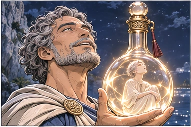
독일어 원문 · 한국어 번역
HOMUNCULUS:
Ergieß'ich gleich des Lichtes Menge,
Bescheiden doch, daß ich das Glas nicht sprenge.
PROTEUS:
Was leuchtet so anmutig schön?
THALES:
Gut! Wenn du Lust hast, kannst du's näher sehn.호문쿨루스: 나는 수많은 빛을 쏟아 붓는다. 내가 유리잔을 깨지 않도록 겸손해지세요. 프로테우스: 무엇이 이렇게 우아하게 아름답게 빛나는 걸까요? 탈레스: 좋아요! 마음에 드시면 자세히 살펴보시면 됩니다.
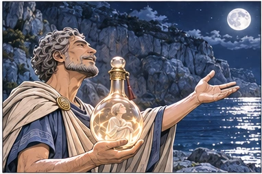
독일어 원문 · 한국어 번역
Die kleine Mühe laß dich nicht verdrießen
Und zeige dich auf menschlich beiden Füßen.
Mit unsern Gunsten sei's, mit unserm Willen,
Wer schauen will, was wir verhüllen.작은 문제가 당신을 괴롭히도록 두지 마십시오 그리고 인간의 두 발로 자신을 보여주십시오. 우리의 호의와 우리의 뜻으로 우리가 은폐한 것을 보고 싶은 사람.
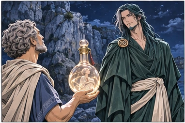
독일어 원문 · 한국어 번역
PROTEUS:
Weltweise Kniffe sind dir noch bewußt.
THALES:
Gestalt zu wechseln, bleibt noch deine Lust.
PROTEUS:
Ein leuchtend Zwerglein! Niemals noch gesehn!
THALES:
Es fragt um Rat und möchte gern entstehn.프로테우스: 당신은 여전히 세상의 속임수를 알고 있습니다. 탈레스: 형태를 바꾸는 것은 여전히 당신의 욕망입니다. 프로테우스: 빛나는 작은 난쟁이! 아직 본 적이 없습니다! 탈레스: 조언을 구하고 나타나기를 원합니다.
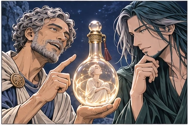
독일어 원문 · 한국어 번역
Er ist, wie ich von ihm vernommen,
Gar wundersam nur halb zur Welt gekommen.
Ihm fehlt es nicht an geistigen Eigenschaften,
Doch gar zu sehr am greiflich Tüchtighaften.내가 그 사람에게서 들은 대로 그는 기적적으로 반만 태어났습니다. 그에게는 영적인 자질이 부족하지 않습니다. 그러나 눈에 보이는 효율성이 너무 많습니다.
독일어 원문 · 한국어 번역
Bis jetzt gibt ihm das Glas allein Gewicht,
Doch wär' er gern zunächst verkörperlicht.
PROTEUS:
Du bist ein wahrer Jungfernsohn,
Eh' du sein solltest, bist du schon!지금까지 유리 하나만으로도 그에게 무게가 주어졌지만, 그러나 그는 먼저 구체화되기를 원합니다. 프로테우스: 당신은 진정한 처녀 아들입니다. 당신이 되기 전에, 당신은 이미 그렇습니다!
독일어 원문 · 한국어 번역
THALES:
Auch scheint es mir von andrer Seite kritisch:
Er ist, mich dünkt, hermaphroditisch.
PROTEUS:
Da muß es desto eher glücken;
So wie er anlangt, wird sich's schicken.탈레스: 이는 다른 관점에서도 중요해 보입니다. 내 생각에 그는 자웅동체이다. 프로테우스: 그렇다면 성공해야 합니다. 그가 거기에 가는 방법은 괜찮을 거예요.
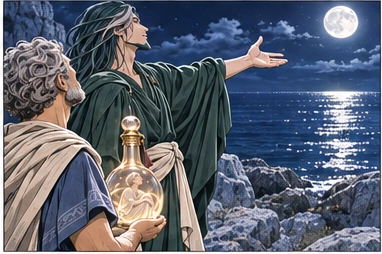
독일어 원문 · 한국어 번역
Doch gilt es hier nicht viel Besinnen:
Im weiten Meere mußt du anbeginnen!
Da fängt man erst im kleinen an
Und freut sich, Kleinste zu verschlingen,하지만 여기서는 별로 생각할 것이 없습니다: 넓은 바다에서 시작해야 해! 당신은 작게 시작합니다 가장 작은 것을 삼키는 것을 기뻐하며,
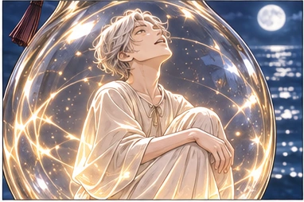
독일어 원문 · 한국어 번역
Man wächst so nach und nach heran
Und bildet sich zu höherem Vollbringen.
HOMUNCULUS:
Hier weht gar eine weiche Luft,
Es grunelt so, und mir behagt der Duft!당신은 조금씩 성장합니다 그리고 더 높은 성취를 이루기 위해 스스로를 형성합니다. 호문쿨루스: 여기에 부드러운 바람이 불고, 너무 찐하고 향도 좋아요!
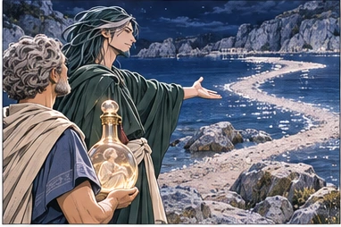
독일어 원문 · 한국어 번역
PROTEUS:
Das glaub' ich, allerliebster Junge!
Und weiter hin wird's viel behäglicher,
Auf dieser schmalen Strandeszunge
Der Dunstkreis noch unsäglicher;프로테우스: 나는 그것을 믿는다, 사랑하는 소년아! 그리고 점점 더 편안해지고, 이 좁은 해변에서 분위기는 더욱 말로 표현할 수 없습니다.
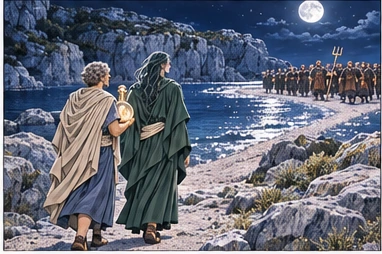
독일어 원문 · 한국어 번역
Da vorne sehen wir den Zug,
Der eben herschwebt, nah genug.
Kommt mit dahin! +
THALES:
Ich gehe mit.앞에 기차가 보이는데, 여기 떠 있는 것, 충분히 가깝습니다. 나와 함께 거기로 가세요! + 탈레스: 나는 당신과 함께 갈 것이다.
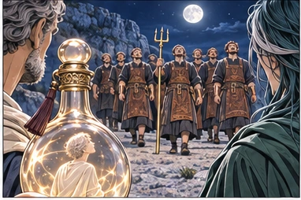
독일어 원문 · 한국어 번역
HOMUNCULUS:
Dreifach merkwürd'ger Geisterschritt!
CHOR:
Wir haben den Dreizack Neptunen geschmiedet,
Womit er die regesten Wellen begütet.
Entfaltet der Donnrer die Wolken, die vollen,호문쿨루스: 트리플 이상한 유령 단계! 합창: 우리는 해왕성의 삼지창을 만들었고, 그는 가장 활기찬 파도를 먹입니다. 천둥이 구름을 펼칠 때, 가득 찬 구름들이,
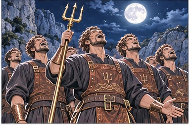
독일어 원문 · 한국어 번역
Entgegnet Neptunus dem greulichen Rollen;
Und wie auch von oben es zackig erblitzt,
Wird Woge nach Woge von unten gespritzt;
Und was auch dazwischen in ängsten gerungen,Neptunus는 끔찍한 롤링에 응답합니다. 그리고 위에서 들쭉날쭉하게 깜박이면서, 파도 뒤에 파도가 아래에서 뿌려집니다. 그리고 그 사이에서 두려움 속에서 몸부림치는 것이 무엇이든,
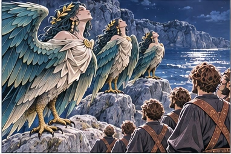
독일어 원문 · 한국어 번역
Wird, lange geschleudert, vom Tiefsten verschlungen;
Weshalb er uns heute den Zepter gereicht--
Nun schweben wir festlich, beruhigt und leicht.
SIRENEN:
Euch, dem Helios Geweihten,오랫동안 던져진 후에 가장 깊은 것에게 삼키워진다. 그가 오늘 우리에게 홀을 건네준 이유는- 이제 우리는 축제처럼 조용하고 가볍게 떠다닙니다. 사이렌: 봉헌된 헬리오스인 당신께,
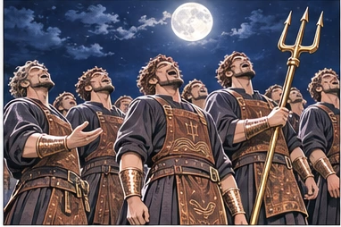
독일어 원문 · 한국어 번역
Heitern Tags Gebenedeiten,
Gruß zur Stunde, die bewegt
Lunas Hochverehrung regt!
TELCHINEN:
Allieblichste Göttin am Bogen da droben!쾌활한 태그 축복, 이사 시간에 인사드립니다. 루나의 동경이 흔들린다! 텔친: 저 위 아치에 있는 가장 사랑스러운 여신!
독일어 원문 · 한국어 번역
Du hörst mit Entzücken den Bruder beloben.
Der seligen Rhodus verleihst du ein Ohr,
Dort steigt ihm ein ewiger Päan hervor.
Beginnt er den Tagslauf und ist es getan,당신은 당신의 형제가 기쁨으로 칭찬받는 것을 듣습니다. 당신은 축복받은 로즈의 말에 귀를 기울이고, 그에게서 영원한 찬가가 솟아난다. 그가 하루의 달리기를 시작하고 그것이 끝나면,
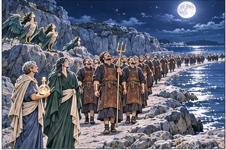
독일어 원문 · 한국어 번역
Er blickt uns mit feurigem Strahlenblick an.
Die Berge, die Städte, die Ufer, die Welle
Gefallen dem Gotte, sind lieblich und helle.
Kein Nebel umschwebt uns, und schleicht er sich ein,그는 불타고 빛나는 시선으로 우리를 바라보고 있습니다. 산, 도시, 해안, 파도 하나님이 기뻐하시는 그들은 사랑스럽고 밝습니다. 우리 주변에는 안개가 맴돌지 않으며, 안개가 끼어든다면
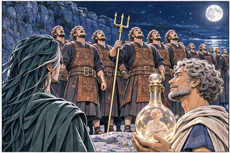
독일어 원문 · 한국어 번역
Ein Strahl und ein Lüftchen, die Insel ist rein!
Da schaut sich der Hohe in hundert Gebilden,
Als Jüngling, als Riesen, den großen, den milden.
Wir ersten, wir waren's, die Göttergewalt광선과 바람, 섬은 순수합니다! 그러면 높은 사람은 자신을 수백 가지 형태로 바라본다. 청년으로서, 거인으로서, 큰 자로서, 온유한 자로서. 처음엔 우리였지, 신들의 힘이었어
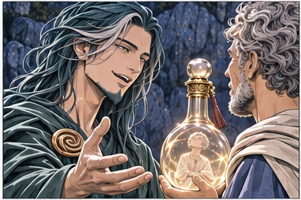
독일어 원문 · 한국어 번역
Aufstellten in würdiger Menschengestalt.
PROTEUS:
Laß du sie singen, laß sie prahlen!
Der Sonne heiligen Lebestrahlen
Sind tote Werke nur ein Spaß.위엄 있는 인간의 모습으로 자리잡았습니다. 프로테우스: 노래하게 하고 자랑하게 하라! 태양의 신성한 생명 광선 죽은 작품은 농담일 뿐이다.
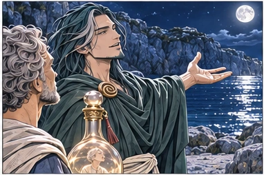
독일어 원문 · 한국어 번역
Das bildet, schmelzend, unverdrossen;
Und haben sie's in Erz gegossen,
Dann denken sie, es wäre was.
Was ist's zuletzt mit diesen Stolzen?그것은 녹고, 흔들리지 않고 형성됩니다. 그리고 그들이 그것을 놋쇠로 주조했을 때, 그러면 그들은 그것이 뭔가라고 생각합니다. 마침내 이 교만한 자들에게 무슨 문제가 있는 것입니까?
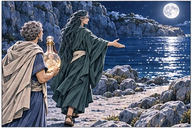
독일어 원문 · 한국어 번역
Die Götterbilder standen groß--
Zerstörte sie ein Erdestoß;
Längst sind sie wieder eingeschmolzen.
Das Erdetreiben, wie's auch sei,신들의 형상이 우뚝 솟아 있었습니다. 땅의 충격이 그들을 멸망시켰습니다. 그들은 다시 녹은 지 오래되었습니다. 지구의 표류는 무엇이든 간에
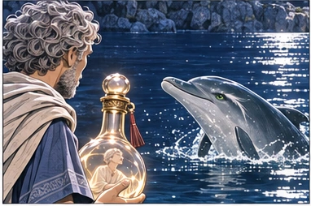
독일어 원문 · 한국어 번역
Ist immer doch nur Plackerei;
Dem Leben frommt die Welle besser;
Dich trägt ins ewige Gewässer
PROTEUS-DELPHIN:
Schon ist's getan!그것은 항상 고된 일입니다. 파도는 삶에 더 좋습니다. 당신을 영원한 바다로 인도합니다 프로테우스 돌고래: 이미 완료되었습니다!
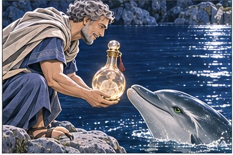
독일어 원문 · 한국어 번역
Da soll es dir zum schönsten glücken:
Ich nehme dich auf meinen Rücken,
Vermähle dich dem Ozean.
THALES:
Gib nach dem löblichen Verlangen,당신은 최고의 행운을 누릴 것입니다: 나는 당신을 내 등에 업고 바다와 결혼하세요. 탈레스: 칭찬할 만한 소망을 따라 주고,
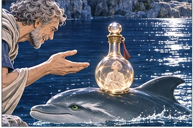
독일어 원문 · 한국어 번역
Von vorn die Schöpfung anzufangen!
Zu raschem Wirken sei bereit!
Da regst du dich nach ewigen Normen,
Durch tausend, abertausend Formen,처음부터 생성을 시작하려면! 빠르게 행동할 준비를 하세요! 그곳에서 당신은 영원한 기준에 따라 움직입니다. 수천 가지의 형태를 통해,
독일어 원문 · 한국어 번역
Und bis zum Menschen hast du Zeit.
PROTEUS:
Komm geistig mit in feuchte Weite,
Da lebst du gleich in Läng' und Breite,그리고 그 사람에게 다가갈 시간이 있습니다. 프로테우스: 영적으로 젖은 궁창으로 오십시오. 거기에서 당신은 같은 길이와 폭으로 살고 있습니다.
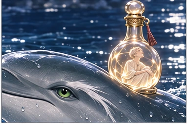
독일어 원문 · 한국어 번역
Beliebig regest du dich hier;
Nur strebe nicht nach höheren Orden:
Denn bist du erst ein Mensch geworden,원하는대로 여기로 이사하세요. 더 높은 주문을 위해 노력하지 마십시오. 일단 인간이 되면,
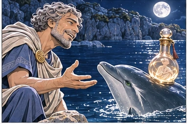
독일어 원문 · 한국어 번역
Dann ist es völlig aus mit dir.
THALES:
Nachdem es kommt; 's ist auch wohl fein,
Ein wackrer Mann zu seiner Zeit zu sein.
그러면 당신과의 일은 완전히 끝났습니다. 탈레스: 그것이 온 후에; 그것도 괜찮아, 그 시대에 용감한 사람이 되는 것.